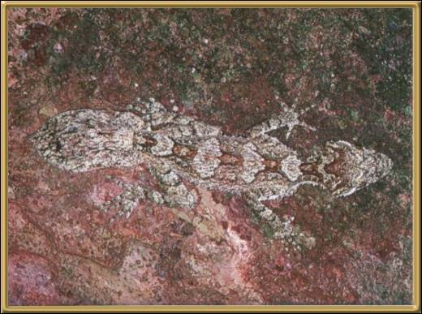

This is another Gecko that is amazingly good at disguising himself. They're found only in the east of Australia and grow to more than 20cm long (approx. 8 inches), making them one of the largest of the Gecko's.
Photographer: Unknown